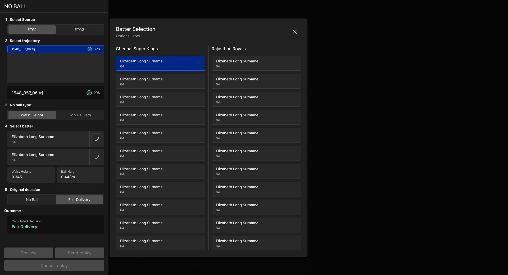

My placement year.
Hawk-Eye is a sports technology company. During my placement I designed tools for the operators who run its systems at live events, working closely with product managers, developers and the operators themselves.
I worked on a few tools during the year. This case study focuses on the cricket no-ball review panel, because it shows my whole process, from talking to operators to a finished product. There's a shorter look at a basketball tool at the end.
Cricket “No Ball” Review Panel
When a no-ball is reviewed during a live match, an operator has to select the delivery, pick the type of no-ball, choose the batter and confirm the umpire's original decision, all before the replay goes out on TV.
I designed a new panel for this inside Hawk-Eye's existing cricket review system.
Operators have to make four decisions quickly, under pressure, before a no-ball replay can go out.
Talked to operators about what frustrated them, then improved the panel with their feedback.
The panel is now used in the IPL.
- Talk to operatorsCalls on Google Meet and regular messages about what they needed and what annoyed them.
- DesignA panel built around the four choices in a no-ball review.
- ShareEach version went to operators for feedback.
- RefineMade every step clearer based on what they said, then shared it again.
- ShipAdded to the cricket review system, and now used in the IPL.
Talking to the operators.
I had calls with operators on Google Meet and messaged them regularly. I wanted to find out what they needed from a no-ball review and what annoyed them about the current process.
I then shared each version of the design with them and made changes based on their feedback.
Number the steps
- What I found
- The review always follows the same order, and it's easy to miss a step when you're working fast.
- What I did
- I numbered each step in the panel, so operators can always see what's left to do.
Warn before mistakes
- What I found
- Some information isn't available straight away during a live review.
- What I did
- Warnings show when something is missing, so it can be fixed before the replay goes out.
One decision at a time
- What I found
- Showing every option at once made it harder for operators to focus.
- What I did
- I grouped the options into four stages: the delivery, the no-ball type, the batter and the original decision.
Keep it familiar
- What I found
- Operators already use Hawk-Eye's review software every match.
- What I did
- I made the panel look and work like the rest of the software, so operators could pick it up quickly without extra training.
What operators told me.
Each version went to operators for feedback. The same theme kept coming up: reviews happen under pressure, so they need to know exactly what they're doing at every moment.
- What they said
- Every step and option had to be clear straight away, with nothing to work out mid-review.
- What I changed
- I made the labels on each step and option clearer with each version.
- What they said
- The button they need to press next should be obvious.
- What I changed
- I made sure the button to press next always stands out from everything else.
Now used in the IPL.
The panel was added to Hawk-Eye's cricket review system and is now used in the IPL (Indian Premier League).
Basketball Status Tool
A tool for operators to update the status of live basketball games and report data problems as they happen. Each game is a card, so problems stand out across several games at once, and updates open in a pop-up so operators never lose their place.